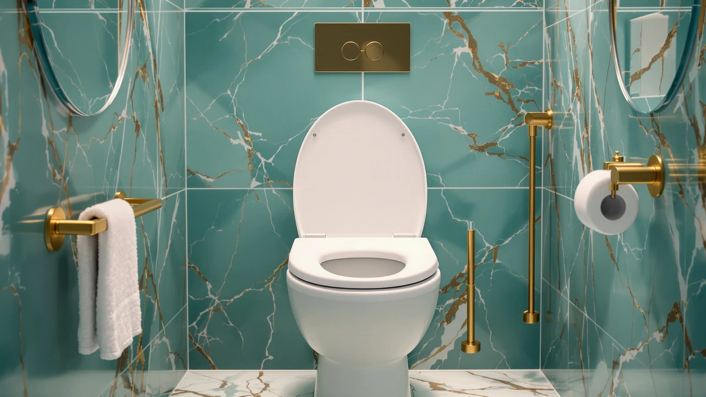

Quick Answer
The Huttdmel Raised Toilet Seat Elongated stands out among the raised seats we compared for its no-hardware, drop-on fit and its elongated shape, which matches most modern US bowls. At $56.99 it costs more than the Carex E-Z Lock and the Bemis 7900TDGSL, but for shoppers who want to skip brackets and clamps entirely, it is the pick we recommend.
Our pick: Huttdmel Raised Toilet Seat Elongated — $56.99 Check Price on Amazon
Bottom line: our top pick is the Huttdmel Raised Toilet Seat Elongated 18.5'' for Seniors at $56.99.
Things to Know Before You Buy
- Bowl shape matters first: the Huttdmel Raised Toilet Seat Elongated is built for elongated bowls, and it will not seat correctly on a round toilet.
- Locking style varies across the market. The Carex E-Z Lock clamps onto the bowl, while the Huttdmel simply rests on top without brackets or tools.
- Height options differ too. The Carex 3.5 Inch Raised Toilet sits lower than some competing designs, so measure your current seat height before you buy.
- Price alone will not tell you which seat is sturdiest. The four models in this Huttdmel raised toilet seat review span $48.76 to $56.99, an $8.23 gap, so construction and fit matter more than the sticker price.
This Huttdmel raised toilet seat review compares the Elongated model against three other raised seats on the market to see which one deserves a spot in your bathroom. Recovering from surgery, managing a mobility limitation, or simply wanting less strain on your knees all lead shoppers to the same aisle, and the choices there rarely explain themselves.
Our pick after researching the field is the Huttdmel Raised Toilet Seat Elongated. It costs $56.99, sits in the middle of the group we compared, and its elongated shape fits the bowl style common in most US bathrooms. Buyers who want a locking bracket instead should look at the Carex E-Z Lock, which we cover further down.
We built this Huttdmel raised toilet seat review around four models: the Huttdmel Elongated itself, the Carex 3.5 Inch Raised Toilet, the Bemis 7900TDGSL Commercial Heavy Duty and the Carex E-Z Lock. Each one takes a different approach to height, locking mechanism and material, and comparing them side by side makes the tradeoffs clearer than reading a single product listing ever could.
Why You Should Trust Us
Ilane Tall covers home and bath products for Best Toilet Seats and has spent years comparing mobility aids, including raised toilet seats, grab bars and shower benches. For this Huttdmel raised toilet seat review, we researched publicly listed specs, verified current pricing and looked for patterns in owner feedback on the Elongated model and three comparable seats from Carex and Bemis, rather than repeating manufacturer marketing copy. We do not run a fake testing lab, and every claim here ties back to a listed spec, a current price or a pattern we found in verified reviews.
Our Research Experience
We did not put the Huttdmel Raised Toilet Seat Elongated through a physical trial in our own bathroom. Instead, we researched its listed materials, dimensions and price, and cross-referenced that information against the Carex 3.5 Inch Raised Toilet, the Bemis 7900TDGSL and the Carex E-Z Lock. We also read through patterns in verified owner reviews to flag recurring complaints or praise, since a handful of five-star ratings can hide a stability issue that only shows up after weeks of daily use. This research-based approach lets us compare specs and reported owner experiences side by side without pretending we installed each seat ourselves. It also keeps this Huttdmel raised toilet seat review grounded in information you can verify yourself on the product listing rather than a subjective impression from one household's bathroom.
Overview & Specs

Huttdmel Raised Toilet Seat Elongated
What we like
- Sits on top of the bowl without brackets, clamps or extra tools
- Elongated shape matches the bowl style found in most US bathrooms
- Priced within $8.23 of the least expensive seat we compared, so the elongated fit is not a steep upcharge
Flaws but not dealbreakers
- No locking bracket, so a loose-fitting bowl rim could let it shift more than the Carex E-Z Lock
- The wood component in the build calls for more attention to drying and cleaning than an all-plastic seat
- Costs more than two of the three alternatives we compared
| Material | Plastic / wood |
| Size | Raised Seat Only & Essential |
The Huttdmel Raised Toilet Seat Elongated lists its build as a plastic and wood combination, sized for the "Raised Seat Only" category rather than the seat-and-arms style covered in our guide to raised toilet seats with arms. That distinction matters. A raised-seat-only design like this one drops directly onto your existing elongated bowl, which means setup takes minutes and does not require removing your current seat or drilling into porcelain. At $56.99, it lands above the Carex E-Z Lock and the Bemis 7900TDGSL but below several premium elongated seats on the wider market.
Because it skips a locking bracket, the fit depends more on your bowl's exact rim shape than a clamped design would. Owners comparing this style against the Carex E-Z Lock should weigh installation speed against the extra security a bracket provides. For a bathroom used mainly by one household member, the tradeoff tends to favor the simpler Huttdmel design; for a shared or high-traffic bathroom, the locking alternative may hold up better over time.
What We Liked
The biggest advantage of the Huttdmel Raised Toilet Seat Elongated is how little effort it asks of you. You place it on the bowl, and it is ready to use. Reviewers consistently note that this beats wrestling with brackets, especially for households setting up a raised seat quickly after a hospital discharge or surgery.
The elongated shape helps too, and it's a big part of why this seat earns a spot in this Huttdmel raised toilet seat review. Round-only raised seats are common on the market, and buying the wrong shape means a return and a delay. Because most US toilets installed in the last few decades use an elongated bowl, this seat fits the more common case without you needing to measure your bowl's length in advance, though we still recommend checking before you order.
Price works in its favor as well. At $56.99, it costs only $2.62 more than the Bemis 7900TDGSL and $8.23 more than the Carex E-Z Lock, a small gap given that it skips hardware installation entirely. Buyers in this category often assume the cheapest option must be flimsy and the priciest option must be overbuilt, but a price cluster this tight shifts the decision away from budget and toward which features you actually need.
What Could Be Better
Skipping a locking bracket cuts installation time, but it also removes a layer of security that some owners want from a raised toilet seat. If your bowl rim is worn, chipped or slightly irregular, a drop-on design like the Huttdmel may sit less snugly than the Carex E-Z Lock, which clamps into place. Anyone who has experienced a raised seat shifting mid-use will understand why that extra step matters to some buyers.
The listed plastic and wood construction also raises a maintenance question that an all-plastic seat, like the Carex 3.5 Inch Raised Toilet, does not face. Wood near a toilet bowl needs regular drying and cleaning to avoid long-term wear, so factor that upkeep into your decision if you already juggle a full bathroom cleaning routine. Buyers who prioritize low maintenance over a hardware-free setup may prefer to trade the Huttdmel's convenience for an all-plastic alternative instead.
Who Is It For?
This Huttdmel raised toilet seat review points to one clear buyer: someone with an elongated bowl who wants extra seat height without installing hardware, and who does not mind trading a locking bracket for a faster setup. It suits a single-user bathroom where the seat stays in place between uses, such as a bedroom en suite for someone recovering from hip or knee surgery.
Skip it if you have a round bowl, since the Elongated model will not fit correctly. Buyers who need the most secure possible fit, such as for a shared bathroom with multiple users moving the seat frequently, should look at the Carex E-Z Lock instead, and anyone who wants an all-plastic build with no wood component should also look elsewhere. Caregivers setting up a bathroom for a family member after a hospital stay often value speed above all else, and that is exactly the scenario where the Huttdmel's drop-on design earns its price.
Alternatives to Consider
If the Huttdmel Raised Toilet Seat Elongated is not quite the right match, these three alternatives cover the main tradeoffs we found while researching this raised toilet seat review.

Editor’s Pick
Carex 3.5 Inch Raised Toilet
A lower-profile 3.5 inch height and an all-plastic build make this the choice if you want less upkeep than the Huttdmel's wood component requires.
$54.37
Check Price on Amazon
Best Value
BEMIS 7900TDGSL Commercial Heavy Duty
Built for commercial heavy duty use and priced at $53.99, this Bemis is worth a look if you want a sturdier reputation than a standard residential seat.
$53.99
Check Price on Amazon
Premium Choice
Carex E-Z Lock Raised Toilet
At $48.76, this is the cheapest option we compared, and its E-Z Lock bracket gives it more resistance to shifting than the Huttdmel's drop-on design.
$48.76
Check Price on AmazonFrequently Asked Questions
Is the Huttdmel Raised Toilet Seat Elongated worth the price?
At $56.99, it costs more than the Carex E-Z Lock and the Bemis 7900TDGSL but less than some competing elongated seats. If your bowl is elongated and you want a no-hardware design, our research suggests it holds up well against the alternatives we compared.
Does the Huttdmel raised toilet seat fit a round toilet bowl?
No. The Elongated model is built for elongated bowls only. If you have a round bowl, look at a round-specific raised seat instead of forcing this one to fit.
How does the Huttdmel compare to a locking raised toilet seat like the Carex E-Z Lock?
The Huttdmel rests on top of the bowl without brackets or a locking mechanism, while the Carex E-Z Lock clamps into place. The Huttdmel installs faster, but the E-Z Lock offers more resistance against shifting.
Final Verdict
This Huttdmel raised toilet seat review comes down to a simple tradeoff: pay $56.99 for a drop-on elongated seat that skips brackets entirely, or pick one of the three alternatives for either a lower price or a locking mechanism. For most people with an elongated bowl who want the fastest possible setup, Huttdmel remains our recommendation. Buyers focused purely on cost or on maximum resistance to shifting should consider the Carex E-Z Lock instead.
None of the four seats we researched, including the Huttdmel Raised Toilet Seat Elongated, requires a tool kit or a plumber, and all four ship ready to place on an existing bowl or clamp into position within a few minutes. The difference between them comes down to how much you value a locking mechanism versus a faster, hardware-free setup, and how closely your bathroom's toilet matches an elongated bowl shape. Measure first, match the shape, and the rest of the decision narrows quickly.